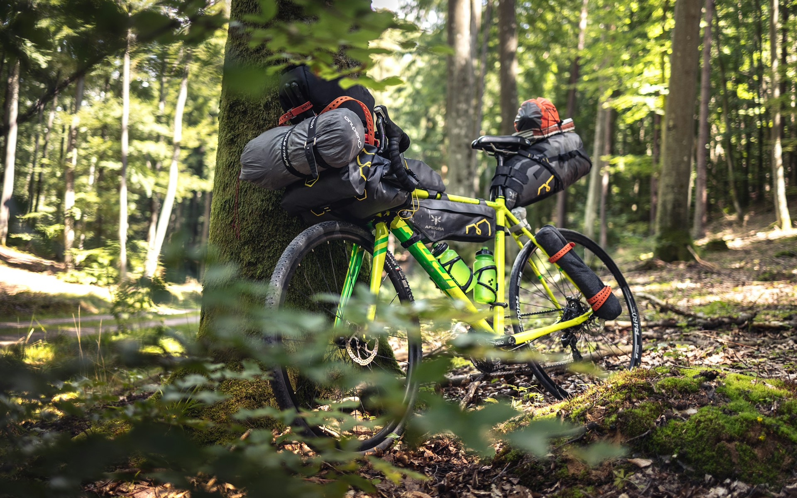

ICCC is built around road cycling and mountain biking, but the club is open to anyone who rides. Whether you commute, gravel ride, bikepack, spin indoors, or race track — there's a place for you here. No formal programmes yet for these disciplines, but your ideas and involvement help shape what the club becomes.
Daily rides through the city, fixies, cargo bikes, and everything in between. Cycling as transport and lifestyle — connect with other urban riders in the club.
Quiet roads, mixed surfaces, overnight trips. If you love exploring off the beaten path, share your routes and adventures with the club and help kick off informal group rides.
Train on Wattbikes at Ethos Gym or a smart trainer at home. Flexible, weather-proof, and open to all levels — connect via Strava and share your rides with fellow members.
Less represented at the club for now, but very welcome. If you ride track, BMX, or cyclocross — or want to get into it — get in touch and find other members with the same interest.
The club is shaped by its members. If you want to see more of a certain type of riding at ICCC, the best way is to join and make it happen.